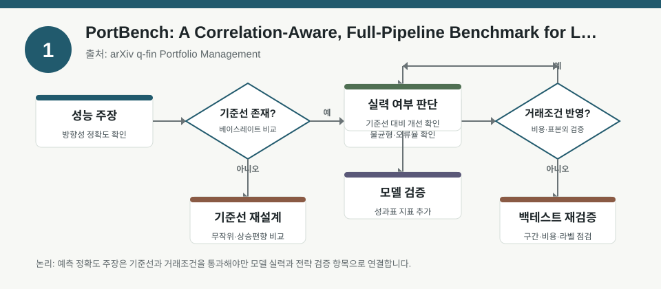
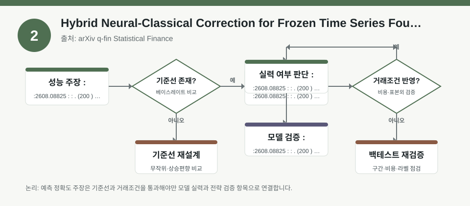
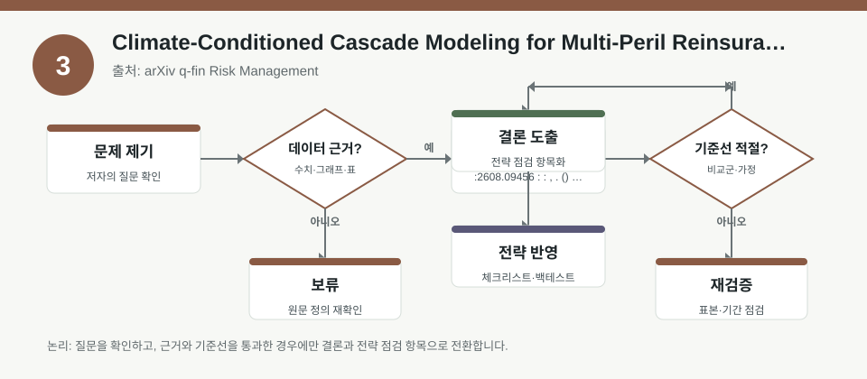

핵심 요약
- 결론: 최신 자료들은 “예측 성능”보다 “상관관계·리스크 경로·검증 절차”를 함께 봐야 포트폴리오 해석이 가능하다는 점을 강조합니다.
- 원칙: 숫자와 성과는 원문 메타데이터만으로 확정하지 말고, 백테스트 범위·가정·자산군·리스크 측정 방식은 반드시 원문에서 재확인해야 합니다.
주목할 자료
| 번호 | 자료 | 출처 | 원문 | 핵심 내용 | 데이터 포인트 | 리스크/한계 |
|---|---|---|---|---|---|---|
| 1 | PortBench: A Correlation-Aware, Full-Pipeline Benchmark for LLM-Driven Portfolio Management | arXiv q-fin Portfolio Management | 원문 보기 | LLM 기반 포트폴리오 관리의 “전체 의사결정 흐름”을 상관관계까지 포함해 평가하려는 벤치마크입니다. | 자산 간 상관, 포트폴리오 구성, 의사결정 파이프라인 전반의 평가 필요 | 벤치마크가 실제 운용비용, 슬리피지, 제약조건을 얼마나 반영하는지 원문 확인 필요 |
| 2 | Hybrid Neural-Classical Correction for Frozen Time Series Foundation Models: A Comprehensive Ablation Study on High-Frequency Stock Prediction | arXiv q-fin Statistical Finance | 원문 보기 | 고빈도 주가 예측에서 고정된 시계열 파운데이션 모델을 보정하는 하이브리드 접근의 효과를 비교한 연구입니다. | 고빈도 구간의 예측오차 보정, 모델 고정(frozen) 상태, ablation 비교 | 고빈도 데이터의 노이즈, 과최적화, 거래비용 반영 여부를 검증해야 함 |
| 3 | Climate-Conditioned Cascade Modeling for Multi-Peril Reinsurance: Analysis and Controlled Numerical Applications | arXiv q-fin Risk Management | 원문 보기 | 기후 재난이 연쇄적으로 전파되는 위험을 조건부·순차적 구조로 모델링한 연구입니다. | 동시 손실이 아니라 사건 순서와 상태 의존 전파를 다룸 | 보험 재난 모델이 주식 포트폴리오의 직접 대체는 아니며, 매핑 가능한 위험요인만 선별해야 함 |
자료별 상세
1. PortBench: A Correlation-Aware, Full-Pipeline Benchmark for LLM-Driven Portfolio Management

- 핵심: LLM 포트폴리오 평가는 단일 예측 정확도보다 자산 간 상관관계와 의사결정 전 과정을 함께 봐야 한다는 문제의식을 담고 있습니다.
- 데이터 포인트: 포트폴리오 구성, 리밸런싱, 신호 생성, 실행 단계별 성능과 상관 노출을 분리해 확인할 필요가 있습니다.
- 리스크: 벤치마크가 실제 수수료, 슬리피지, 시장충격, 제약조건을 포함했는지 원문 기준으로 검수해야 합니다.
- 투자전략 반영 예시: 한국 투자자는 KOSPI·KOSDAQ 업종 비중과 원달러 환율 민감도, 금리·변동성 구간별 노출을 체크리스트로 분해해 볼 수 있습니다.
- 실행 예시: 동일 신호라도 업종 분산, 환헤지 유무, 현금 비중, 손절 규칙별로 백테스트를 나눠 성과 차이를 비교하는 항목을 점검할 수 있습니다.
2. Hybrid Neural-Classical Correction for Frozen Time Series Foundation Models: A Comprehensive Ablation Study on High-Frequency Stock Prediction

- 핵심: 고빈도 예측에서는 대형 파운데이션 모델을 그대로 쓰기보다, 도메인 특화 보정이 성능에 중요할 수 있다는 점을 다룹니다.
- 데이터 포인트: 고정 모델의 한계를 보완하는 선형·통계적 보정이 실제로 어떤 구간에서 개선되는지 확인하는 구조입니다.
- 리스크: 고빈도 주가 데이터는 잡음과 미세구조 효과가 커서, 표본 구간과 거래비용 반영 여부에 따라 해석이 달라집니다.
- 투자전략 반영 예시: 한국 투자자는 초단기 신호를 쓸 때 업종별 체결강도, 거래대금, 변동성 확대 구간에서의 신호 안정성을 별도 점검할 수 있습니다.
- 실행 예시: 장중·장마감·공시 이벤트 구간을 나눠 예측 오차, 샤프 유사 지표, 회전율을 분리 검증하는 체크리스트를 만들 수 있습니다.
3. Climate-Conditioned Cascade Modeling for Multi-Peril Reinsurance: Analysis and Controlled Numerical Applications

- 핵심: 위험은 한 번에 동시에 발생하는 손실만이 아니라, 사건이 이어지며 커지는 전염형 경로로도 나타날 수 있다는 점을 보여줍니다.
- 데이터 포인트: 조건부 위험, 사건 순서, 상태 의존 전파를 따로 모델링하는 프레임입니다.
- 리스크: 재보험 모델의 구조를 국내 주식시장에 적용할 때는 업종·공급망·정책·기후 노출로만 제한해 해석해야 합니다.
- 투자전략 반영 예시: 한국 투자자는 전력·건설·보험·소비재처럼 기후·정책·공급망 충격에 민감한 업종의 리스크 체크 항목을 따로 둘 수 있습니다.
- 실행 예시: 폭염·홍수·태풍 같은 이벤트를 가정해 업종별 매출 민감도, 보험손해 가능성, 운영중단 리스크를 분리 점검하는 시나리오 표를 만들 수 있습니다.
팩터·리스크·포트폴리오 관점
- 핵심: 세 자료 모두 “단순 평균 성과”보다 팩터 노출, 상관관계, 사건 전파, 실행 비용을 함께 봐야 한다는 공통점을 가집니다.
- 검수: 실제 투자 적용 전에는 표본 기간, 자산군 범위, 리밸런싱 규칙, 비용 반영, 외생 변수 통제 여부를 원문에서 반드시 확인해야 합니다.
정리
- 결론: 최신 연구를 읽을 때는 모델이 맞췄는지보다 어떤 위험을 어떤 가정 아래에서 맞췄는지가 더 중요합니다.
- 다음 확인: 원문에서 데이터 기간, 거래비용, 상관구조, 고빈도 노이즈 처리, 시나리오 전파 가정을 먼저 확인해 해석 범위를 정리해야 합니다.